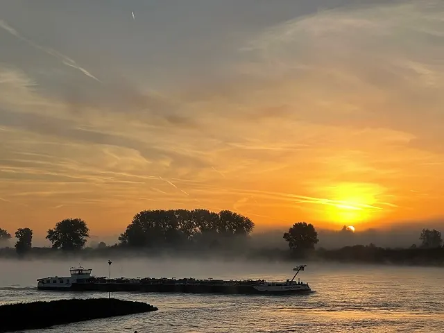
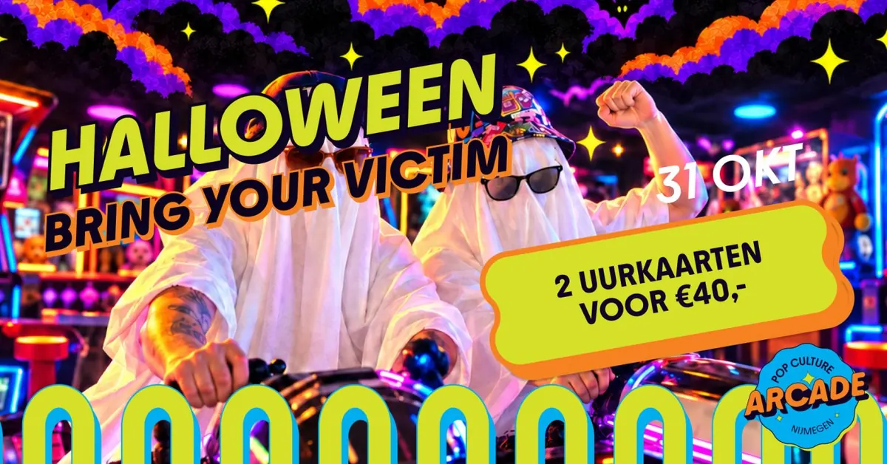

Dit evenement is afgelopen. Bekijk wat er binnenkort te doen is.
Uitgelicht evenement
Highlight Tours in het Vrijheidsmuseum
- Wanneerzondag 25 oktober 2026, 14.00 tot 15.30 uur
- WaarVrijheidsmuseum
Wylerbaan 4, 6561 KR Groesbeek Route - Bekijk op de website van Vrijheidsmuseum

Iedere laatste zondag van de maand zijn er Highlight Tours door het museum. Deze 1,5 uur durende rondleiding brengt u langs de hoogtepunten van het Vrijheidsmuseum onder leiding van een deskundige gids. Een rondleiding kost €5 (excl. Museumentree) en wordt gehouden in het Nederlands.
In het Vrijheidsmuseum beleven jong en oud het verhaal van de Tweede Wereldoorlog en de bevrijding, in samenhang met de geschiedenis van de 20e eeuw en de actualiteit. Dit verhaal laat zien hoe we vrijheid verloren, ervoor vochten, haar herwonnen en moeten bewaken. Hierbij komen verschillende perspectieven aan bod, er is nooit één verhaal. Bezoekers worden geprikkeld zelf stil te staan bij het thema ‘vrijheid’. Wat betekent dit nu, in deze tijd? Wat bedreigt de vrijheid en hoe kunnen we haar beschermen?
Reserveren kan via de website. Wees er snel bij, de ruimte is beperkt.
Na afloop van de rondleiding heeft u de mogelijkheid om een bezoek te brengen aan de tijdelijke tentoonstelling, het museumcafé of de winkel.
Meer evenementen bij Vrijheidsmuseum

Binnenkort in Nijmegen
 Filmvertoning: Het land van mijn ouders27 okt, 19.00 uurHuis van de Nijmeegse Geschiedenis
28okt
Filmvertoning: Het land van mijn ouders27 okt, 19.00 uurHuis van de Nijmeegse Geschiedenis
28okt De Stevenskerk tot 159128 okt, 20.00 uurHuis van de Nijmeegse Geschiedenis
30okt
De Stevenskerk tot 159128 okt, 20.00 uurHuis van de Nijmeegse Geschiedenis
30okt
Tent van Troost30 okt – 2 novGrote Markt en Stevenskerk 31okt
Halloween bij Pop Culture Arcade31 okt, 12.00 uurPop Culture Arcade